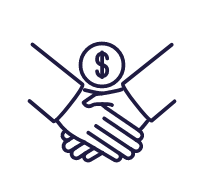
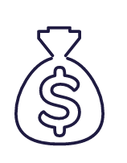
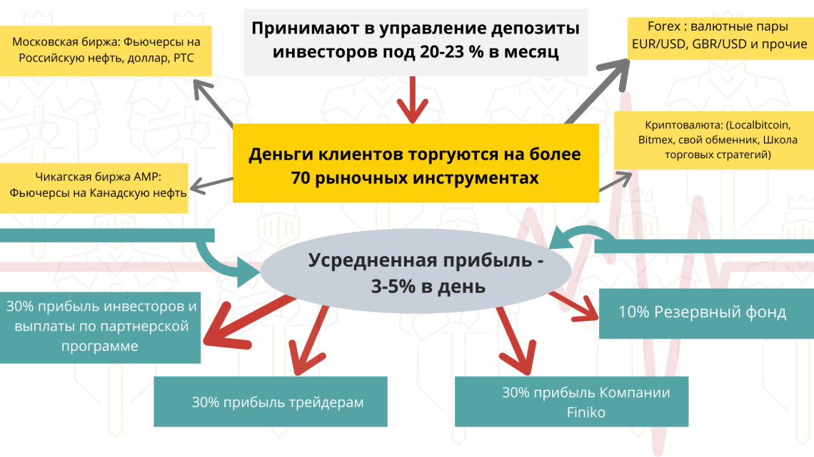

Покупка любой недвижимости и авто за 35% от продажной стоимости (без банков и ипотечной кабалы)
Закрытие долгов
Погашение кредитов/займов (и других долговых обязательств) за 35% от остатка за 10 месяцев

Кэшбек-сервис с возвратом от 15 до 25%
Кэшбек-сервис с начальным кэшбеком 15% (до 25%) на ВСЕ (продукты питания в любом супермаркете, любые АЗС, аптеки, авиабилеты, также платежи по ИПОТЕКЕ и кредитам, итд)

Инвестиции
Увеличение Вашего капитала с доходностью 20-22% в месяц, с ежедневным выводом процентов
Рождение компании Finiko началось с того, что Кирилл Доронин, создатель компании "Финико", волей судьбы встретив талантливых трейдеров, приумножал свой капитал и делал это с большим успехом. Его друзья, увидев результаты стали просить взять их деньги в управление, а чуть позже друзья друзей. Так и появилась идея создать платформу, с помощью которой каждый желающий мог бы дать свои средства в управление профессионалам.
На данный момент компания в стадии развития и расширения, в ней работает штат трейдеров, каждый из которых торгует одним рыночным инструментом. За счет того, что все они торгуют на разных инструментах, это позволяет диверсифицировать риски и всегда торговать только в плюс делая в среднем +50-60% к депозиту в месяц. Да, звучит не реально, но это действительно возможно на определенных рыночных инструментах.
Имея благие намерения, компания придумала интересный маркетинговый ход, чтобы как можно больше капитализировать средств в свое управление. На сегодняшний день, основная потребность людей в том, чтобы закрыть кредиты, ипотеки, купить хорошую машину, квартиру, дом. И компания "Финико" помогает своим клиентам решать эти вопросы достаточно быстро, а взамен получает благодарных клиентов и увеличение капитализации, и как следствие рост доходности.
Вы завели 3000$ на депозит. Через 3 дня вам начинают начислять проценты. Почему через 3 дня? Это время компания размещает ваш депозит на своих биржевых счетах, чтобы запустить в работу. Проценты можно выводить от 100$. Вывод тела депозита можно заказать в любой момент, компания вернет его вам на 21 рабочий день со дня вывода.
2 шаг. В личном кабинете, в разделе "Кэшбек сервис", вносите сумму депозита (минимальная сумма депозита - 100$, максимальная - 1000000$). На этот депозит получаете ежедневно прибыль в размере 6% в месяц (72% годовых).
3 шаг. Прикрепляете чеки на любые покупки (в том числе платежи по ипотеке и кредитам, платежи по ЖКХ) и получаете на эти суммы кэшбек от 15% до 25% (базовая процентная ставка по кэшбеку - 15%, увеличение ставки зависит от вашего карьерного статуса).
Кэшбек сервис работает по всему миру.
Возврат живыми деньгами.
Кэшбек начисляется равными частями ежедневно в течение 150 дней.
Если нет депозита - нет кэшбэка, нет процентов на депозит.
Какие чеки можно загружать - фискальный, выписка из банка, скриншот из приложения банка.
Что нельзя загружать - банковский перевод, товарный чек, приходник.
Данная программа позволяет закрыть любую задолженность - кредит, ипотеку (в том числе просроченную задолженность), долги перед физическими лицами, налоговые долги итд - за 35% от остатка долга.
Остаток по кредиту 500 000р. Внесли 35% от остатка - 175 000Р + 5 000Р (офисный сбор 1%) + 10 000Р (за обслуживание в год). Раз в месяц (за 3-5 дней до платежа кредита) в течение 10 месяцев компания начисляет на ваш кошелек в личном кабинете по 30% от суммы взноса = 52 500Р, таким образом кредит будет погашен досрочно за 10 месяцев. Для этого оплату в банк необходимо производить двумя чеками: первый чек - очередная оплата по графику платежей кредита, второй чек - это частично-досрочное погашение. После оплаты, фотографию или отсканированный вариант этих чеков прикрепляете в личном кабинете в разделе "Мои долги" для отчета перед менеджерами программы "Закрой кредит"..
Выбрали авто стоимостью 1 000 000. Внесли 350 000 + 10 000 (1% офисный сбор) + 165$ (за обслуживание). В личном кабинете вы увидите дату получения денег, Через 120 календарных дней на кошелек начисляется сумма на покупку автомобиля или недвижимости. С этого дня, в течении 30 календарных дней вам будет необходимо выбрать авто или недвижимость, приобрести и зарегистрировать на свое имя. Также в личном кабинете необходимо подтвердить покупку правообладающими документами на автомобиль или недвижимость.
Компанией учитывается сумма налога с вашего дохода по данной программе. Эта сумма налога (для России - 13% от суммы дохода, для всех остальных стран - 15% от суммы дохода) начисляется компанией и будет доступна к снятию с вашего кошелька в личном кабинете в следующем году (в период срока для оплаты налога по законодательству вашей страны).
В личном кабинете появится раздел "Налоги" (с подробными инструкциями как оплатить налог).
У каждого из нас найдутся дела, которые требуют периодических финансовых вложений: ЖКХ, аренда квартиры, офиса, обучение, детский сад, лечение, ремонт, хобби и т.д.
В этом ролике Кирилл Доронин рассказывает, как с помощью продукта Finiko.Life на платформе thefiniko.com можно забыть об этих постоянных взносах.
Также, Кирилл рассказывает механику работы системы, где с Вас потребуется только установить свои условия и внести одноразовый платеж:
- Итоговая сумма за год;
- Периодичность платежей (раз в неделю, месяц, квартал, полгода и год).
Рассмотрим пример на аренде квартиры. Условно расходы за год на аренду квартиры составят 240 000 рублей (20 000р * 12 месяцев). Далее выбираем желаемую периодичность платежей - раз в неделю, месяц, квартал, полгода или год.
При внесении этих исходных данных, система сама рассчитает сумму единоразового взноса. Коэффициент расчета зависит от выбранной периодичности выплат и составляет:
раз в неделю - 1.8
раз в месяц - 2.4
раз в 3 месяца - 3.0
раз в 6 месяцев - 3.6
раз в 12 месяцев - 4.8
В нашем случае, если у нас годовая сумма расхода на аренду квартиры 240 000 рублей, и периодичность выплат 1 раз в месяц, то необходимая сумма взноса составит 100 000 рублей. Таким образом, с помощью данного продукта FINIKO.LIFE мы сэкономим 140 000 рублей.
Вспомните, есть ли у вас вещь, которую вы хотели бы приобрести, но цена «кусается»?
Программа Finiko.Product позволяет не только реализовать покупку любой желаемой вещи, цена на которую для вас является неподъемной, но и сэкономить до 70% от стоимости.
Вы сами определяете сумму, которую вы можете потратить и скорость получения 100% стоимости вещи.
Источники и распределение прибыли компании Finiko :

ВНИМАНИЕ: В ближайшее время компанией Финико будет внедрена программа Кредитования партнеров.
Если у вас испорченная кредитная история, или по каким либо другим причинам банки вам не одобряют кредит, то Финико дает возможность создать вашу кредитную историю с нуля в Финико.
Программа кредитования будет работать по системе Р2Р кредитования ("person-to-person кредитование"), где Финико будет выступать гарантом сделки!
Успевайте регистрироваться в Finiko !
Видео-отзывы партнеров Finiko:
Ответы на часто задаваемые вопросы :
Рождение компании Finiko началось с того, что создатель компании Кирилл Доронин, имея потребность найти актуальную сферу деятельности, где можно создать финансовый капитал, познакомился с командой талантливых трейдеров! С их помощью он начал приумножать свой капитал и делать это с большим успехом. Его друзья, увидев результаты стали просить взять их деньги в управление, а чуть позже друзья друзей. Так и появилась идея создать платформу, с помощью которой каждый желающий мог бы дать свои средства в управление профессионалам.
На данный момент компания в стадии развития и расширения, в ней работает штат трейдеров, каждый из которых торгует одним рыночным инструментом. За счет того, что все они торгуют на разных инструментах, это позволяет диверсифицировать риски и всегда торговать только в плюс делая в среднем +50-60% к депозиту в месяц. Да, звучит не реально, но это действительно возможно на определенных рыночных инструментах.
Имея благие намерения, компания придумала интересный маркетинговый ход, чтобы как можно больше капитализировать средств в свое управление. На сегодняшний день, основная потребность людей в том, чтобы закрыть кредиты, ипотеки, купить хорошую машину, квартиру, дом. И компания "Финико" помогает своим клиентам решать эти вопросы достаточно быстро, а взамен получает благодарных клиентов и увеличение капитализации, и как следствие рост доходности.
в 2017 году, являясь отдельными индивидуальными предпринимателями, ребята начали тестить данную возможность на своем близком окружении и в 2019 году приступили к работе официально для всех желающих.
Документы компании вы можете посмотреть на официальном сайте - в личном кабинете в разделе «Документы».Также они представлены на данном сайте, в разделе «Документы».
Цифроны - это единица расчета внутри нашего сайта, внутренняя валюта. 1 цифрон равен 1$
Это не очередная пирамида, это вообще не пирамида. Потому что мы умеем зарабатывать деньги и мы работаем в абсолютно легальном поле.
Зачем нам строить пирамиду, если мы умеем хорошо зарабатывать на фондовом рынке? Если к нам пришло 3 партнера, то мы работаем с 3 партнерами, если 30 000 партнеров, то с 30 000 партнерами, наше умение зарабатывать деньги абсолютно не зависит от притока новых партнеров.
Убедиться в профессионализме наших трейдеров вы можете просмотрев ролики с онлайн-торгами наших трейдеров, также можете открыть счет на любой бирже и дать нам доступ на управление на 1 неделю, за этот период вы действительно убедитесь в том, что мы умеем зарабатывать.
Справочно: у нас на август 2020г. – более 55 штатных трейдеров.
Мы обеспечиваем минимизацию рисков! Трейдеры используют несколько десятков инструментов при торговле на биржевом рынке, тем самым обеспечивая безопасность инвестирования ваших денег. Если один инструмент принесет убыток, то он компенсируется за счёт прибыли других инструментов. Множество инструментов не могут уйти в минус одновременно. Деньги клиента всегда находятся в безопасности.
А также, каждый трейдер оставляет 25 % своего заработка на рабочем счете. При неудачной сделке, убытки понесёт он, а не компания или инвесторы.
Максимальный риск просадки (уменьшение в результате убыточных торгов), который может допустить трейдер, — 1,5% в день, в этом случае срабатывает система безопасности и торги в этот день автоматически прекращаются на этом инструменте!
Мы не ищем гарантии, мы их создаем:
1. Обеспечиваем диверсификацию (минимизацию) рисков, за счет множества инструментов генерации прибыли (к сентябрю 2020 года количество инструментов торговли на биржах составляет около пятидесяти)
2. Внедрили автоматическую систему безопасности, которая блокирует убыточные сделки.
3. Часть прибыли - 40 % уходит в резервный фонд, поэтому всегда существует возможность выплаты из резервного фонда!
У нас есть партнеры, которые открыли собственные офисы. Это партнеры, которые занимаются обучением других людей, которым интересен сайт «Финико» и его закономерности.
На сегодняшний день офисы уже открыты в таких городах как Москва, Санкт-Петербург, Казань, Нижний Новгород, Волгоград, Сочи, Тольяти, Владивосток, Уфа, Ярославль, Саратов, Симферополь, Оренбург и во многих других.
Партнеры также представлены за рубежом: Казахстан, Узбекистан, Болгария, Украина, Южная Корея.
У нас есть продукты «Закрытие кредитов», «Покупка машин и квартир», «Кэшбек-сервис», "Финико-Продукт", "Финико-лайф". Если вы порекомендуете эти продукты, и люди воспользуются вашей рекомендацией, то вы заработаете первые деньги. Регистрация в компании бесплатная, то есть у нас нет такого, что обязательно какой-то взнос надо делать.
У нас есть очень большая цель, которую мы неоднократно озвучивали на семинарах и вебинарах. Финико – это пространство, на котором мы должны научиться зарабатывать, наша цель – это создать пространство для стартапов. Мы заинтересованы в рынках 30,40,50х годов. Мы очень верим в биотехнологии, нам очень хочется создать какие-то стартапы в области продления человеческой жизни. И будет круто, если это появится у нас.
Поэтому мы создаем капитализацию компании, из капитализации компании, на доход от капитала – наша задача - финансировать и довести продукт до ума.
То есть для нас это вопрос тренировки с большим количеством денег, большой системой генерации прибыли, так, чтобы эти продукты появились на 30-ые, 40-ые, 50-ые годы.
И для создания всей этой системы нам очень важно сформировать аудиторию лояльных партнеров-пользователей.
Для нас инструмент Финико это:
Инструмент получения генерации капитала.
Генерация лояльной аудитории, способной продавать не только финансовые продукты, но и имеющее отношение к репутации.
Умение работать с будущими затратами, которые еще не известно сколько понадобится для того, чтобы появился новый продукт. Эти продукты должны быть 100% прорывные, конкурентоспособные в мировом порядке.
Именно поэтому мы работаем плавно, плавно осваиваем капитал, и наша задача сейчас – часть денег, заработанных, уже начать вкладывать в развитие других проектов.
Нет. Все зависит от тебя самого, от твоих амбиций. Ты можешь решать только свои финансовые задачи с помощью продуктов «Финико», или также параллельно можешь помогать (рекомендовать, приглашать) своему окружению решать их задачи, при этом можешь хорошо дополнительно зарабатывать по реферальной программе. Выбор за тобой, никаких требований по приглашениям в «Финико» - у нас нет.
PS: Многие партнеры, не имеющие стартового капитала для начала сотрудничества с «Финико», начинают именно с рекомендаций, таким образом, с заработанных денег они начинают решать свои задачи с помощью продуктов «Финико».
Во первых, это отнюдь не «легкие» деньги, это работа высококвалифицированная и интеллектуальная.
Во вторых, мы формируем сбытовую сеть под будущие продукты.
В личном кабинете есть раздел "Наследник", где вы указываете фамилию имя отчество, номер телефона и электронную почту, для связи в случае наступления плохого события.
Если вы не гражданин России, то вы можете участвовать в «Финико», поскольку компания международная и наша документация позволяет работать в любой стране. За исключением некоторых нюансов, например если нет пока ни одного партнера в вашей стране. В таком случае свяжитесь с нами через службу поддержки, и мы выясним юридические вопросы на счет работы в вашей стране. На пару-тройку партнеров мы отработаем юридическую модель и дальше будет происходить масштабирование.
По налогам, вы платите налог в стране проживания.
Реферальные ссылку можно взять в личном кабинете, раздел «Партнерка».
Плюсы – вы заработаете реферальное вознаграждение в размере 5% от суммы сделки плюс ежемесячно по 1% от суммы сделки (кроме индексов), также при активных приглашениях на продукт «Индекс CTI» вы сможете увеличить свой доход.
За более подробной информацией обратитесь к вашему рекомендателю (спонсору).
Также периодически проходят промо-акции, где вы сможете выиграть ценные призы, в том числе автомобиль, квартиру.
Доход от индекса – на 3й рабочий день, стоимость самого индекса – на 21й рабочий день.
В рамках индекса все денежные средства распределяются на более чем 70 инструментов, которые в дальнейшем отдаются в работу разным штатным трейдерам. Торговля ежедневная, кроме выходных и праздников. 30% от депозита уходят на внутридневную торговлю (короткие сделки), 30% уходят на позиционную торговлю, 40% остается на резерв (как страховка для выравнивания, если это будет необходимо).
У каждого трейдера максимальный стоп за день – 1,5% от депозита (если стоп фиксированный), а просадка рассчитывается трейдером самостоятельно, если он заработал подушку (есть уже определенная прибыль на том счету, которым управляет трейдер), то есть он может в этом случае рискнуть за свой счет.
Да, это возможно. Мы сейчас проводим онлайн-обучения по трейдингу. На обучение берем только после собеседования. Обучение бесплатное и длится от 1 до 3 месяцев. Бесплатное потому, что мы хотим увеличить количество трейдеров, чтобы минимизировать риски, также собрать одну из лучших команд.
Да, уплата налога на доход в размере 13% является обязательным условием компании, сумму налога для вас зарабатывает компания.
В данное время в личном кабинете интегрирована уплата налога по продуктам покупки авто и недвижимости.
Инструкции по уплате налога спрашивайте у вашего рекомендателя (спонсора).
У вас есть 30 календарных дней, (после начисления 100% стоимости авто или надвижимости в личном кабинете), для предоставления правоподтверждающих документов на авто или недвижимость. В случае не предоставления документов за указанный срок - ваш аккаунт блокируется.